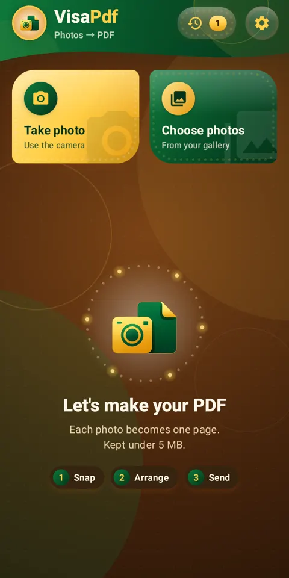

NewID card scanFree
Front and back on one A4 page, at real card size. VisaPdf crops the edges and turns the card straight by itself.
Snap a slip, scan an ID card, sign a contract, turn a PDF into Word – and send it on WhatsApp before the kettle boils. Everything happens on your phone. Nothing is uploaded, ever.





VisaPdf started as “photo to PDF”. Our testers kept asking for more – so now it scans, stamps, signs, counts, reads and converts. The first six are brand new.
Front and back on one A4 page, at real card size. VisaPdf crops the edges and turns the card straight by itself.
Scan any code and add it to your PDF as a sharp page. Web links in QR codes can be tapped right inside the PDF.
Date and time on your photo – drag it where you want. Proof of delivery, site visits, meter readings. 2 looks free, 4 more with Pro.
Stock-take in minutes: keep scanning, the same code counts up. Get a neat PDF table or an Excel sheet.
Turn any PDF or photo into a Word file you can edit, an Excel sheet with real numbers, or a PowerPoint deck.
Open any PDF: sign it, fill in forms, search, copy text. Pro adds draw, highlight, text, whiteout and page tools.
Words in your photos become real text. Long-press any word to copy it – or search the whole PDF.
Your phone reads the PDF out loud and lights up each line as it goes. Pick the voice and speed.
Payslips and statements stay private: lock any PDF with strong AES-256 encryption before you send it.
Slips, invoices, homework, a lease – here's the whole thing, start to finish.
Tap Take photo to use VisaPdf's camera (front or back), or Choose photos to pick from your gallery. Every photo becomes one page.
Move pages up or down, remove one with ✕. Tap Tt on a page and its words become real text you can copy and search Pro.
Tap a page to edit it. Drag the gold corners to crop, turn it left or right, and pick B&W document for that crisp scanned look.
Tap Make PDF. It's kept small (under 5 MB) so it fits in any email. Then tap WhatsApp, Share or Save. Done!
Every PDF waits in History – even if you never sent it. Search by name, preview it, edit it, or send a few at once.
Tap a tool to open its steps.
💡 Already have pages in your list? The ID card joins them as the next page.
💡 QR codes in your normal photos work too – VisaPdf finds them and makes their links tappable.
💡 A signature here is a picture of your signature – fine for everyday forms, not a certified digital signature.
Everything in the free version works for real – no watermarks, no trial. Pro is for people who do this every day.
| What you get | Free | Pro |
|---|---|---|
| Make PDFs | ||
| Photos & camera to PDF (front + back camera) | Yes | Yes |
| Crop, turn, black & white document look | Yes | Yes |
| ID card – front & back on one page | Yes | Yes |
| QR / barcode pages, tappable links | Yes | Yes |
| PDF size | 5 MB | Any |
| Make text from photos (Tt) | No | Yes |
| Read it to me | No | Yes |
| Camera tools | ||
| Time stamp camera | 2 looks | 6 + note |
| Scan a list – counted, PDF table or Excel | No | Yes |
| PDF studio | ||
| Open, zoom, search, copy, print | Yes | Yes |
| Sign & fill in forms | Yes | Yes |
| Open password PDFs | Yes | Yes |
| Draw, highlight, add text, photo, whiteout | No | Yes |
| Delete, move, copy, add pages · join PDFs | No | Yes |
| Lock with a password · page numbers · watermark | No | Yes |
| Save as Word, Excel, PowerPoint | No | Yes |
| Sending & extras | ||
| History, send several, email one by one | Yes | Yes |
| Works on tablets & car screens | Yes | Yes |
| No ads | No | Yes |
Google Play shows the exact price for your country. No subscription, no monthly fees – ever.
ID cards, payslips, contracts – VisaPdf reads, scans and converts them all on your device. No account, no cloud, no uploads. Only you decide where a PDF goes.
Yes. Making PDFs, ID cards, QR pages, the time stamp camera, signing and filling forms all work in the free version, with one small banner ad. Pro is an optional once-off purchase.
No. Everything – scanning, reading text, converting to Word – happens on your phone. VisaPdf has no account and no server.
No. Install VisaPdf with the same Google account, open Settings and tap Restore purchase.
Yes. In WhatsApp, Gmail or Files tap the PDF and pick “Open with VisaPdf”. You can zoom, search, copy, sign, fill in and print – free.
“Visa” comes from the founder's surname, Visagie. It's a general PDF app for any documents – not for visa applications.
Every Visa app works on its own – and they find each other by themselves. VisaSched can even start the others at the right moment.